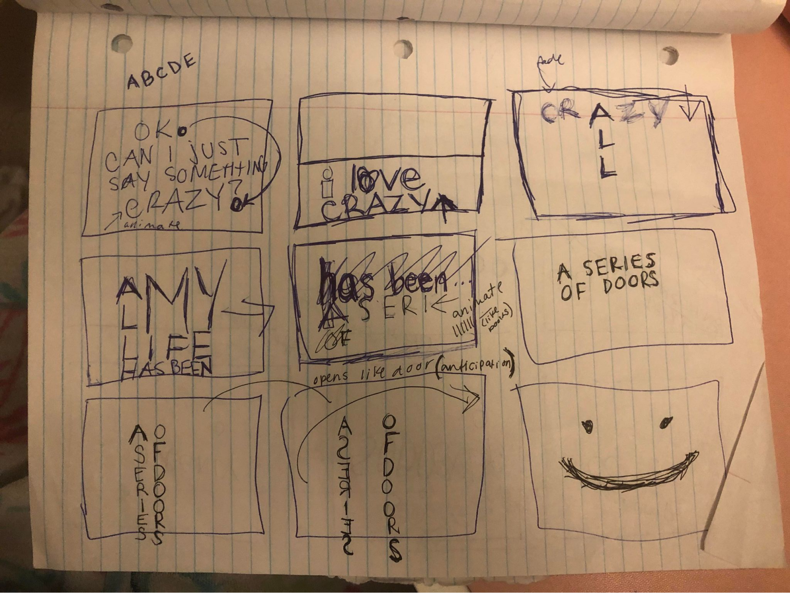

For a media design course, I had 4 weeks to create a minimum one-minute animated typography video to compliment an audio using after effects.
ANALYSIS
First I decided if I was going to use a song or an audio and I ended up choosing “Love is an open door” from the movie “Frozen” because I felt a song with lyrics would be able to paint a story well with graphics.
I then used aftereffects to mark the beats in the song to determine how many frames and transitions I would have.
With this information, I collected inspiration of what the possible colour pallettes and fonts I would use for the art direction. Since the song was more playful and bubbly and romantic, I decided to go with a more round and bubbly colour pallete and font.
I then brainstormed and sketched in my sketchbook of the rough designs of the frames and the transitions I would use.

I then executed these and followed any tutorials if I did not know how to achieve what I wanted.
CHALLENGES
A problem I had encountered was that I refused to name and organize my layers and as the video got longer it was more difficult for me to make changes and find anywhere where I wanted to make minor adjustments. What had helped is that after I completed around 45 seconds of my video, I wanted to change the font but I had many text layers hidden within large layers and everything had the same name etc. With this this forced me to enter all my layers and I renamed them along the way although it was tedius and frustrating.
At this point, i had renamed and organized any more layers that I had made past this point.
EVALUATION
I was able to complete more than one minute of the video and received almost full marks on my project only having 2 points deducted and receiving an A on my project.
REFLECTION
In conclusion, I definitely had learned that even though it can be tedius at the beginning to rename all my layers it is a good habit to form because it would help me in the long run and help if I had to make any adjustments.